Design that cut OPEX 80% for 70 million users.
Security and account issues could only be fixed by an agent, so support cost grew with every new user. Self-service flows and intent routing broke that link.
LinkAja is an Indonesian digital payments and e-wallet app used by 70M+ people.
Customer-service cost after self-service replaced agent tickets.
People reached by the redesigned home screen.
Support cases now solved in the app, without an agent.
- Customer Touch Point revamp: self-service security and account flows replaced agent tickets, cutting customer-service OPEX by up to 80%.
- Co-led the home-screen redesign for 70M+ users, driven by dashboards and research, improving information architecture, clarity and engagement.
- Shipped MyPaylater, a conversational-AI chatbot revamp and loyalty programs; also served as UX Writer for brand voice consistency.
- Recipient of the Customer Champion Award; led designers across features while bridging PMs, business, engineering and research.
Security and account issues could only be resolved by an agent. Each one became a support ticket, so customer-service cost grew with every new user.
Self-service security and account flows replaced agent tickets, so most issues are now solved in the app.
Every issue, simple or complex, waited on a person. Ticket volume scaled with users, and so did cost to serve.
Not a blanket bot: the most frequent cases were mapped by intent and handed to automation, while complex or sensitive issues route straight to the right human, so quality held as cost fell.
Frequent cases resolve in chat. Sensitive ones reach the right agent with the chat history, related transactions and account status attached.
Rebuilt how a regulated fintech ships design.
One shared design system for Product, Engineering and Marketing, and a redesigned deposit funnel that now completes about 12 points more often.
Komunal Indonesia is a regulated fintech. Its DepositoBPR platform lets people place deposits with rural banks.
Deposit-funnel completion after UX audits and a redesign.
Web releases went from weeks to days after the move to Framer.
One design system shared by Product, Engineering and Marketing.
- Championed the move from the legacy Sanity platform to Framer for web components, cutting release cycles from weeks to days.
- Created the company’s first shared design system: one source of foundations, components and tokens across Product, Engineering and Marketing.
- Led UX audits and redesigns that lifted DepositoBPR deposit-funnel completion by roughly 12 percentage points.
- Oversaw ISO / OJK compliance workflows without slowing UX delivery; standardised sprint rituals and PRD templates.
The same offer card, shipped by three teams. Before the system, each drifted a little: its own shade of blue, its own weight of type, its own corners. One library now publishes the tokens all three build from.
DepositoBPR's biggest leak was the funding step. Checkout locked a placement onto one payment rail, then a listener waited for the money. But money moves in Indonesia over several rails (bank virtual accounts, BI-FAST, RTGS), each with its own limits, fees and hours, and every bank adds its own caps. When the sender's bank blocked the transfer, the funds never came and the user sat locked out until the hold expired. The revamp routes first: it checks the amount, bank and time against every rail, shows one clear step, and locks nothing until the funds land.
- Permata VAInterbank pay capped at Rp25M✕
- Xendit · Mandiri VAApp caps VA at Rp30M a day✕
- BI-FASTUp to Rp100M a transfer · 24/7✓
- RTGSMin Rp100M · closes 15:00✕
The +12-point lift is actual; the step rate and volume are illustrative under NDA, as in the funnel below. Limits follow published bank, BI-FAST and payment-gateway rules; they differ by bank and change over time.
Board-level judgment, design-level craft.
I founded and ran a B2B product company for eight years, and have sat on its board since 2021.
Dash is a restaurant ordering platform: table, kitchen, captain and back-office apps, live across 30+ chains.
Lumio is a cloud platform that gives digital-signage owners business metrics and sells their screen time, across 150+ locations.
Diners ordering through Dash every month.
Restaurant chains running on the Dash platform.
Signage locations on the Lumio network, and growing.
- Founder & Director, Dash Inovasi Abadi (2016–2024): a B2B product company serving SME and enterprise F&B and retail brands.
- Product vision behind the Dash ordering platform: real-time table, kitchen, captain and back-office modules, live across 30+ chains and ~200,000 customers a month.
- VP of Design, Lumio: a cloud platform that gives digital-signage owners business metrics and maximises content-slot revenue across 150+ locations.
- Commissioner at Dash and Lumio since 2021: strategy, governance, financial health and risk; primary representative to investors.

Making design teams AI-native.
A data-to-decision workflow that puts live, AI-driven decisions in front of the people running a business, and Chrona, an AI-first social-planning app built with multi-agent Claude Code.
Products taken from concept to working software.
AI-native development, Claude Code and AI fluency.
Multi-agent builds with specialist sub-agents.
- Enterprise AI: a data-to-decision workflow that validates and cleans siloed legacy data, then puts live decisions in front of the people running the business.
- Agentic orchestration: multi-agent Claude Code builds with specialist sub-agents for brand, exploration, prototyping and shipping, including Chrona, an AI-first social-planning app.
- Advisory and mentorship: AI-augmented UX strategy and design systems for businesses; coaching designers on AI tooling in their daily work.
LLM4 days of cover against a 6-day lead time.
A weekly replenishment run: four siloed sources are cleaned and reconciled, an LLM scores demand against lead time, and only a high-confidence call reaches the operator, ready to approve.
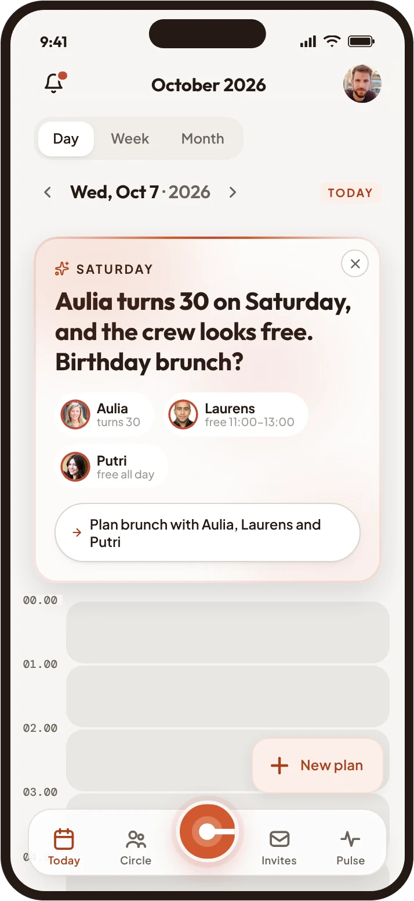
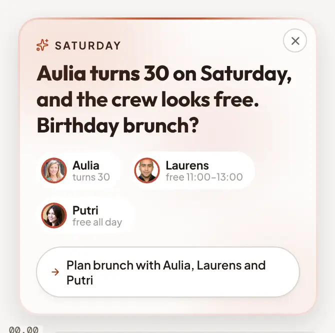
A calendar that plans with you.
Chrona is a social calendar app for people who want to see their friends more often and spend less time planning it.
It reads your week and your circle’s availability, then drafts the plan in one tap. I owned the design system, the AI interaction model and the Claude Code prototype.
plans it
Shipping real products with AI, end to end.
A self-hosted service pulls my live Garmin biometrics every 30 minutes and renders a 1-bit athlete brief for a 7.5″ e-ink panel on my nightstand.
Self-hosted, fetching fresh data every 30 minutes.
Dithered to one bit, rendered on fetch, not on request.
Nothing to pay to keep it running.
- Garmin Connect API: live biometrics, races, sleep and readiness, fetched on a schedule.
- FastAPI fetcher with a SQLite cache, so a Garmin outage never blanks the display.
- Pillow renderer: an 800×480 canvas converted to 1-bit with Floyd–Steinberg dithering, rendered on fetch.
- TRMNL DIY kit (ESP32) on the nightstand; everything behind it designed and built with Claude Code.
A self-hosted service pulls my live Garmin biometrics on a schedule and renders them as a monochrome image for a physical 7.5″ e-ink panel on my nightstand, a glanceable athlete brief that holds its image with zero power and is readable in daylight. The device runs a TRMNL DIY kit (ESP32); everything behind it I designed and built with Claude Code.
What if Garmin Connect read like a cockpit?
Dark display glass, fine graduated scales and one pointer that always means you, now. AI widened the exploration; the direction and every call stayed mine.
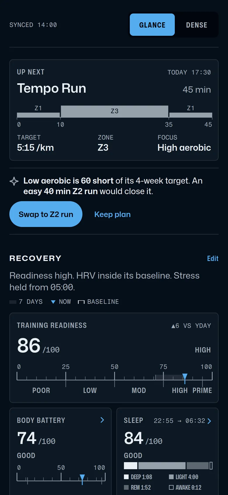
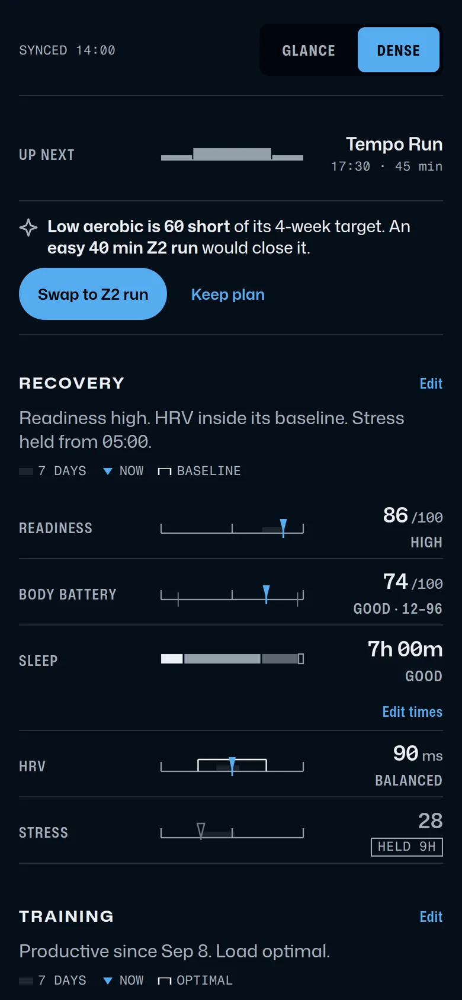
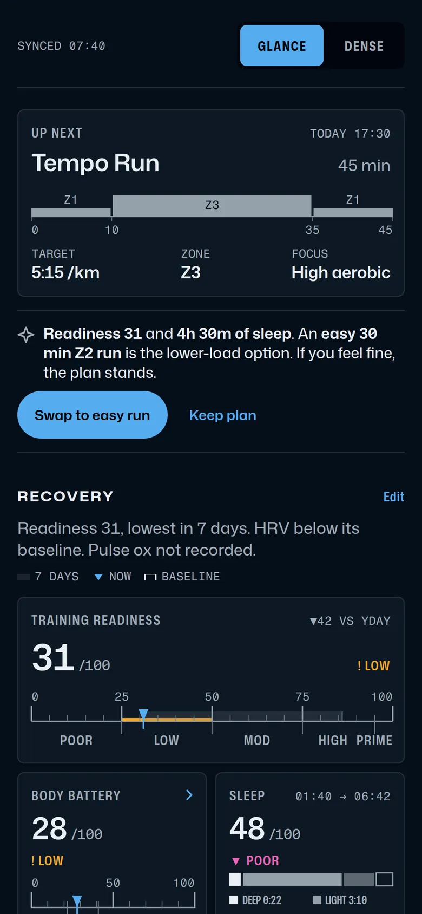
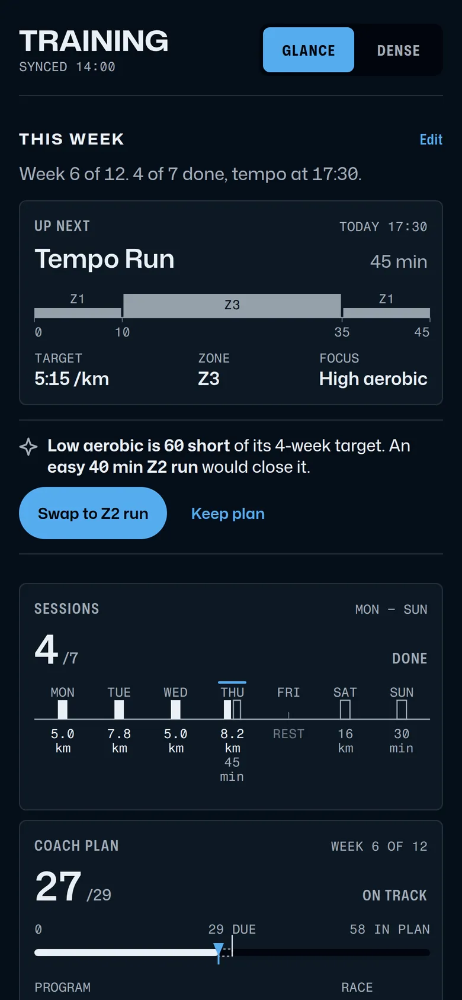
Endurance training keeps me inside the Garmin ecosystem. Every morning the watch hands me a wall of instruments: readiness, Body Battery, HRV, sleep, training load. Reading it all feels like sitting in a cockpit.
So the question became: what if the app read like a well-set instrument panel? Dark display glass, fine graduated scales, one blue pointer that always means you, now.
I used AI to augment the design work. It took the exploration further and wider than I could have gone alone, while the direction and every call stayed mine.
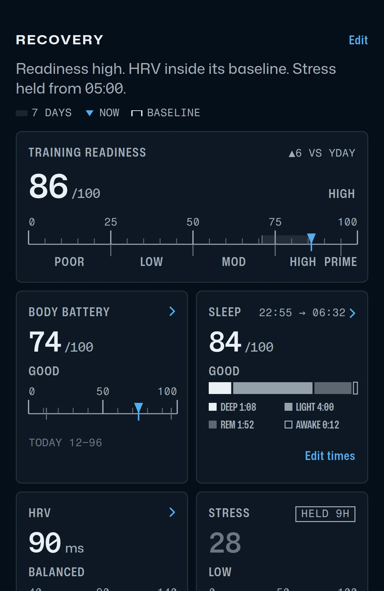
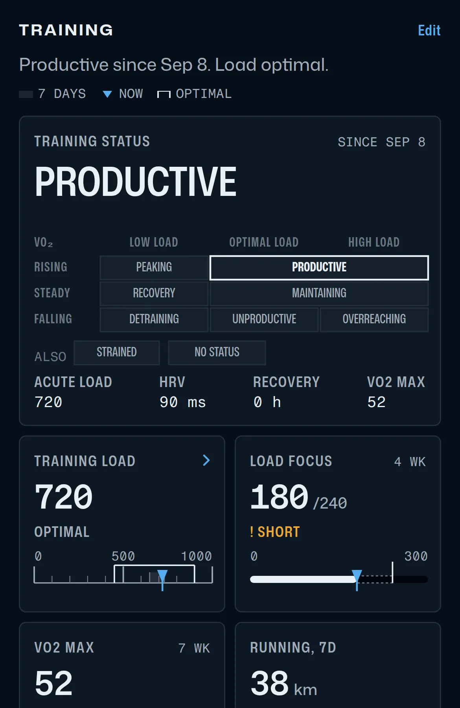
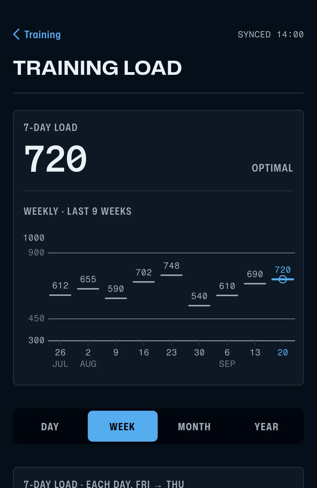
- Home, at a glance: grouped by the question you are asking (recovery, training, today).
- Density is a setting: the same screen, dense, where only the size changes.
- On a hard day, colour appears only when something departs from normal.
- Training, plan first: this week’s sessions, then the load behind them.
Fifteen years across four companies.
Appsindo Technology is a software house, an agency that designs and builds apps for its clients. Four of the client products I designed there:
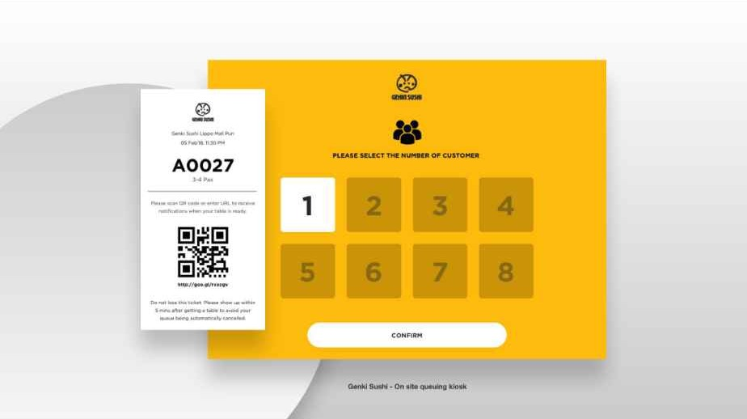
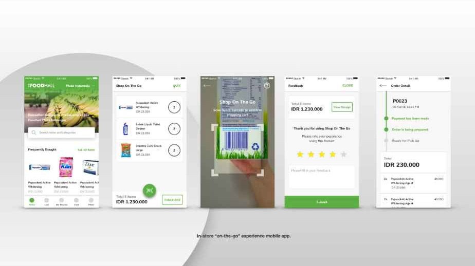
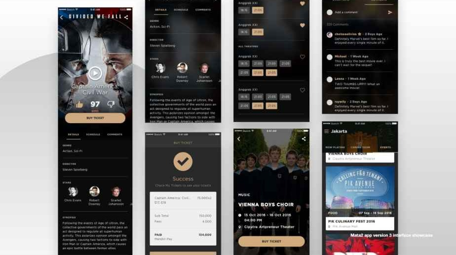
Open to a Head or AVP of Product Design mandate where design owns outcomes, building and scaling teams, design systems and AI-native practice across fintech, platform or consumer products.
HEAD / AVP · PRODUCT DESIGN